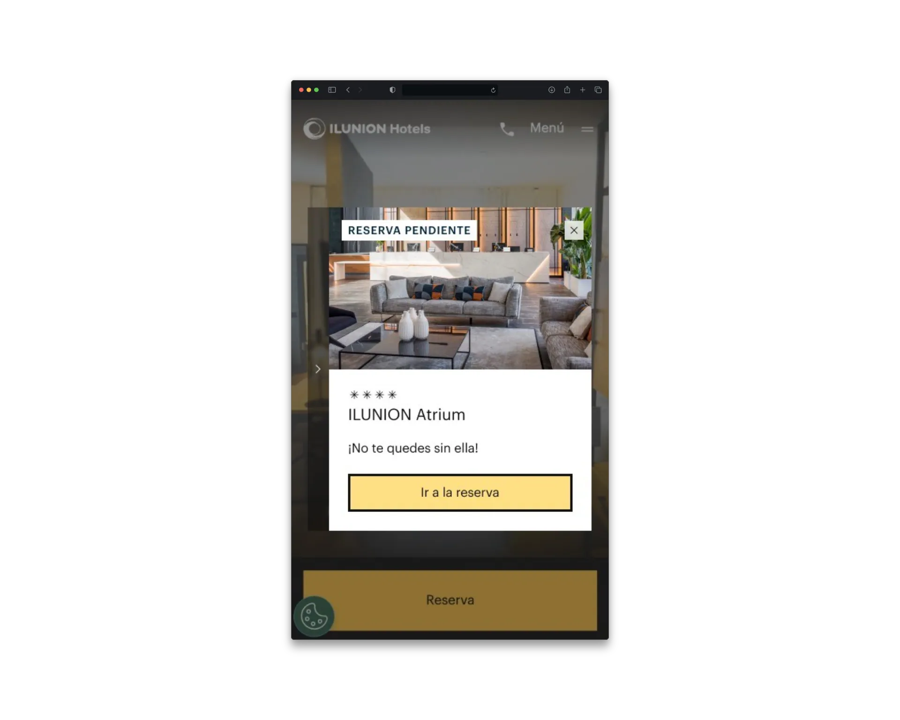
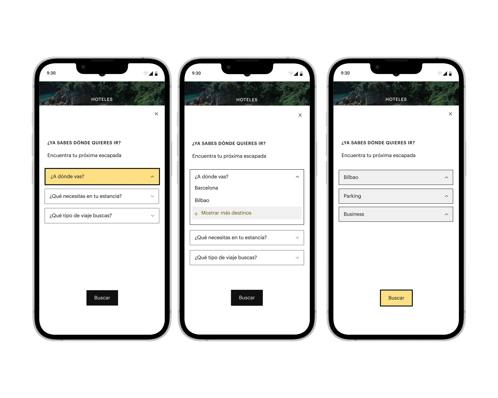
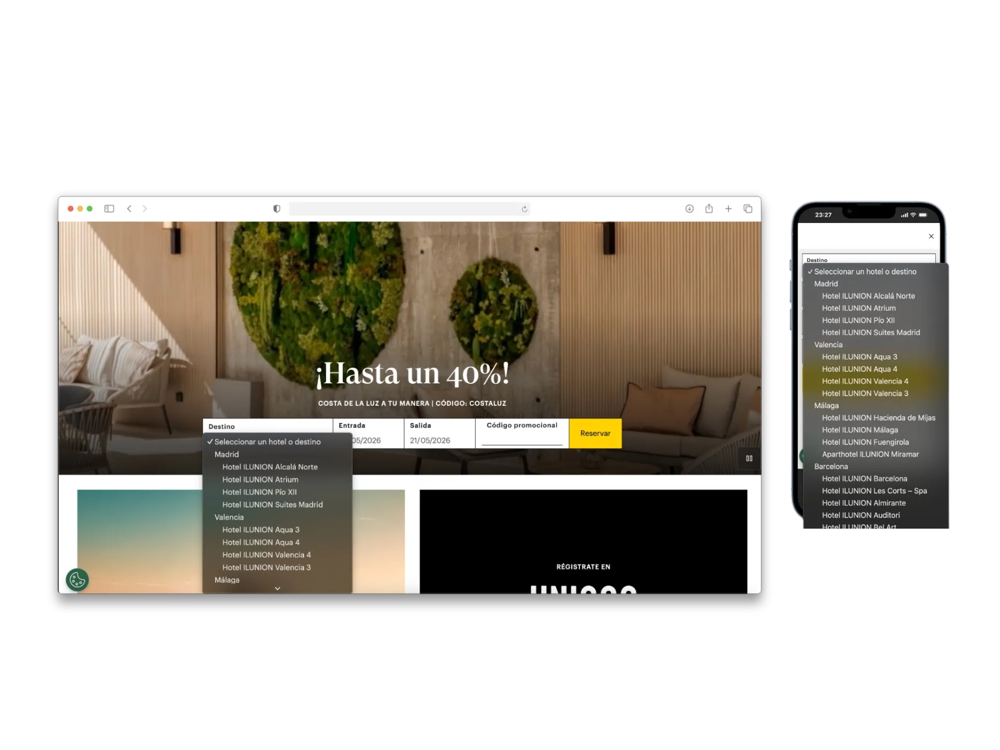
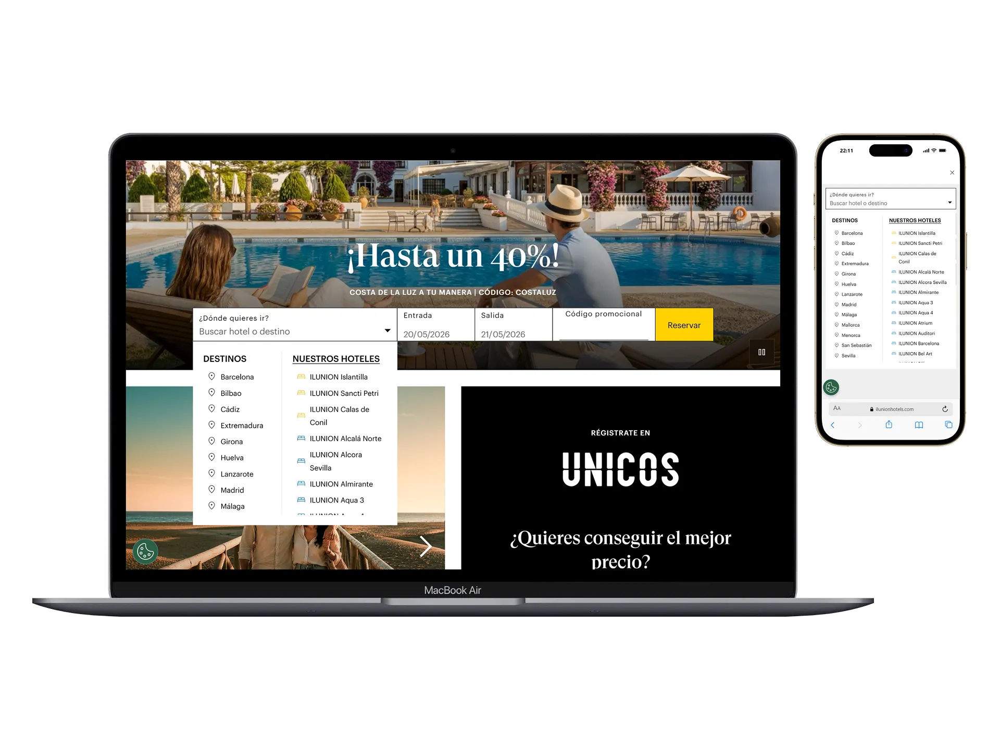

ILUNION Booking Engine
de escaparate a conversión
- UX Research cuantitativo detectando fricción crítica en mobile (60%).
- Problem framing para alinear objetivos comerciales y comportamiento real.
- Diseño y maquetación de flujos de búsqueda limpios y sin distracciones.
- Coordinación de especificaciones técnicas con desarrollo en AEM.
- Descubrimiento post-lanzamiento de patrones de exploración geográfica.
Único diseñador
en un proyecto de CRO activo
Responsabilidades directas
- Análisis cuantitativo de comportamiento: Microsoft Clarity (scroll, patrones de clic, grabaciones) + Adobe Analytics (funnel y abandono)
- Problem framing: identificar la desalineación real entre el modelo mental del site y el del usuario de alta intención
- Diseño diferenciado por dispositivo: arquitectura distinta para desktop y mobile según comportamiento real observado
- Coordinación técnica con desarrollo en Adobe AEM
- Comunicación directa con dirección y marketing en lenguaje de negocio (conversión, customer journey)
Con quién colaboré
- Equipo de desarrollo frontend: implementación en AEM, validación funcional en staging, gestión de constraints técnicos de la plataforma
- Marketing y canal digital: contexto de objetivos de captación y restricciones operativas del entorno en producción
- BI y analítica: fuente de datos de comportamiento y validación de hipótesis
- Dirección de negocio: validación de objetivos y aprobación de propuestas
- Equipo de contenidos: coordinación para mantener coherencia de comunicación durante los cambios estructurales
Alta intención de compra,
fricción en el funnel
El motor de reservas competía visualmente con promociones y contenido de marca en el canal directo. Esto causaba dispersión cognitiva en los usuarios de alta intención de compra, provocando que abandonaran el sitio sin iniciar una búsqueda de habitaciones.
- 75% de sesiones: scroll sin búsqueda
- 60% de fricción crítica en mobile
- Abandono temprano del funnel
Re-alinear prioridades
con el comportamiento real
Consistió en balancear la arquitectura de contenidos con el comportamiento real del usuario, adaptando el motor a los constraints técnicos de Adobe AEM de forma diferenciada en desktop y mobile.
- Desktop: visibilidad inmediata del buscador
- Mobile: arquitectura separada por contexto de uso
- Restricciones AEM como parámetros de diseño
Investigación, estrategia y
rediseño del motor
Research & Análisis de comportamiento
Analicé el comportamiento mediante Microsoft Clarity y Adobe Analytics para cartografiar la profundidad de scroll, la fricción de clics y la tasa de rebote por dispositivo.

"El usuario no quería explorar primero. Quería comprobar disponibilidad lo antes posible."
Problem Framing y priorización de cambios
Existía un conflicto directo entre el modelo mental corporativo ("explora, descubre nuestra marca") y el modelo mental del usuario ("quiero ver disponibilidad y precios"). El rediseño debía transformar un escaparate en una herramienta de conversión eficiente.
- Explora la marca primero
- Descubre nuestros hoteles
- Valora el Club ÚNICOS
- Luego busca disponibilidad
- —Ya sé que quiero reservar
- —Necesito ver disponibilidad YA
- —Precio y fechas son prioridad
- —No quiero explorar, quiero comprobar
Trade-offs gestionados: El rediseño operaba sobre un entorno en producción activo. AEM imponía limitaciones en la personalización de componentes según dispositivo. La solución tuvo que funcionar dentro de estos constraints reales.
Redefiní la jerarquía del acceso al motor priorizando: rapidez de identificación del buscador, claridad visual, reducción de fricción en el inicio de búsqueda y facilidad de interacción desde tráfico de alta intención.

Diseño por dispositivo y puesta en producción
Desktop: Acceso rápido al motor, visibilidad de fechas y ocupación, CTAs claramente expuestos. Mobile: Estructura simplificada para comportamiento táctil: reorganización vertical, reducción de elementos secundarios, optimización del primer scroll.
Trabajé directamente con el equipo de desarrollo en la definición funcional y validación en entorno staging. El objetivo no era entregar diseño visual, sino asegurar coherencia funcional, viabilidad técnica y correcta integración en AEM.


Tras el lanzamiento, el seguimiento con Clarity reveló un hallazgo inesperado: los usuarios utilizaban el buscador como herramienta de exploración de destinos, no únicamente como acceso transaccional. Este descubrimiento derivó en una nueva línea de trabajo estratégica: el diseño de landings específicas por destino con lógica de alta conversión. La diferencia entre hacer una entrega y hacer producto es exactamente esta: seguir mirando después de publicar.
Estados de Interacción y Lógica del Buscador
Estado Inicial (Empty State)
El motor muestra inputs por defecto (ej: "Selecciona destino"). Campo de fechas pre-rellenado con las del día siguiente.
Default inputs displayed (e.g. "Select destination"). Dates prefilled with tomorrow's parameters.
Foco y Sugerencias (Focused)
El usuario activa el input. Despliegue de autocompletado inteligente con los hoteles visitados recientemente y destinos top.
User focuses on input. Intelligent auto-complete reveals recently viewed hotels and top destinations.
Validación de Fechas (Validation)
Lógica de control: fecha de salida posterior a entrada. Si hay inconsistencia, aviso en vivo con tooltip accesible sin refrescar.
Control check: check-out date must be after check-in. Visual tooltip alert shown inline for invalid queries.
Envío y Carga (Search Triggered)
Bloqueo de doble clic en CTA mediante estado Loading. Redirección limpia al motor de reservas con parámetros en la URL.
Disable search button on double-click (loading state active). Clean redirection to search results page with parameters in URL.
Motor priorizado,
nueva oportunidad de producto
El rediseño resolvió la desalineación entre arquitectura del site y comportamiento transaccional. El motor pasó a ser el elemento dominante en el primer scroll. El análisis post-lanzamiento reveló que los usuarios exploraban destinos desde el buscador, lo que abrió una nueva línea de trabajo no contemplada en el brief original.
Datos específicos de conversión son confidenciales. Los resultados reflejan seguimiento analítico, observación de comportamiento y validaciones internas posteriores al lanzamiento.
INTEGRACIÓN DE IA EN PRODUCTO — Optimización de flujos y especificación técnica
Ideación de Flujos
Utilicé modelos de lenguaje como sparring partner para modelar posibles casos de uso extremos (edge cases) del motor en pantallas ultra estrechas.
Used LLMs to brainstorm and model edge-case behavior for the search engine on ultra-narrow viewport widths.
UI Copy Sparring
Generé con IA y testé variaciones rápidas de microcopy para las etiquetas de búsqueda dinámica en español e inglés, optimizando legibilidad.
Generated and validated multiple dynamic search label microcopy options in both Spanish and English for better clarity.
Design QA Automatizado
Inspeccioné el código maquetado del motor usando un prompt estructurado de IA para comparar píxeles, colores y alineaciones contra el UI Kit.
Inspected the live UI using structured AI prompts to systematically compare build margins and alignment with the master UI Kit.
Lo que este proyecto
reveló sobre tomar decisiones de producto
El usuario no siempre sabe lo que quiere, pero sus datos sí. El análisis post-lanzamiento reveló que los usuarios usaban el buscador para explorar destinos, no solo para reservar. Ese insight no estaba en el brief.
El conflicto entre branding y conversión es un problema de priorización, no de diseño. La tensión entre "mostrar la marca" y "facilitar la reserva" se resuelve con una decisión estratégica explícita, no con un rediseño visual.
Hablar el lenguaje del negocio desbloquea decisiones. Justificar en términos de tasa de inicio de búsqueda o coste por captación genera aprobación directa. Justificar en términos de UX genera debate.
La validación continua como parte del proceso, no como fase final. El lanzamiento fue el inicio del ciclo de aprendizaje. El proyecto sigue en optimización activa.